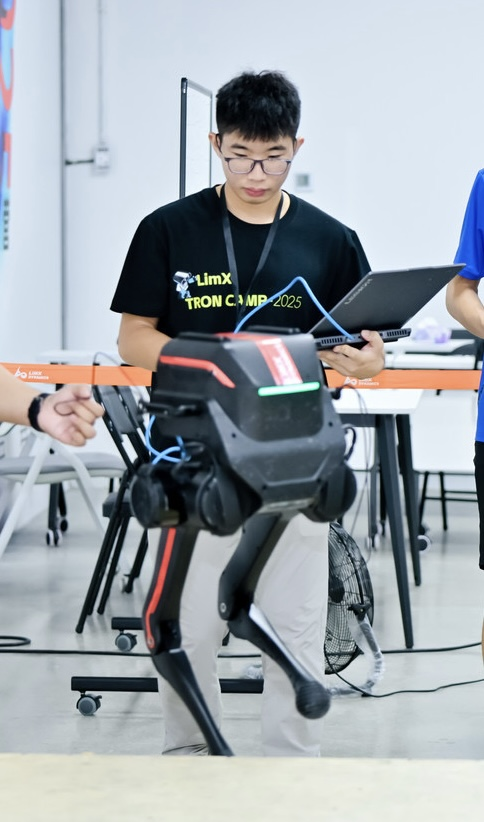

Hi! I’m Yitao Zeng, a senior undergraduate in Automation Engineering at the Southern University of Science and Technology (SUSTech). From September to December, I will join the University of Toronto as an exchange student.
My research is driven by two central questions: How can embodied intelligence help robots operate in rescue and other high-risk environments? And how can we better understand the “brain” of a robot or autonomous agent—the mechanisms behind its perception, reasoning, and decision-making?
I am currently a research intern with the Smart Autonomous Robotics (STAR) Group, advised by Prof. Boyu Zhou, where I work on reinforcement-learning-based control and autonomous perception for aerial robots.
Projects
Projects During Internship at Galbot
2026.1 - 2026.5
- Implemented 3D Diffusion Policy on synthetic datasets as a baseline for the RSS paper StereoVLA.
- Processed and converted a 20TB dataset from TFDS to LeRobot format, achieving a 99.54% validation rate.
- Participated in real-world robot deployment experiments to test initial poses for foundation models.
- Explored methods to improve data utilization using influence functions.


Desktop Cleaning by Robotic Arm via 3D Diffusion Policy
2025.2 - 2025.12
- Developed an imitation learning framework for robotic manipulation tasks using 3D Diffusion Policy, achieving scene-adaptive performance without external markers
- Implemented depth camera-based(RealSense D435i) spatial perception with optimized point cloud processing (fps to 1024 points and cropping)
- Intrinsic and extrinsic calibration of the camera to the base of the robotic arm
- Designed a complete pipeline including data collection, policy training (1001 epochs), and real-world deployment
- Achieved 100% success rate on drawer-closing tasks and 70% on bowl-grasping tasks under randomized conditions
Pointfoot and wheelfoot robot locomotion with reinforcement learning
2025.5 - 2025.8
- Used IsaacGym and IsaacLab to train the pointfoot and wheelfoot robot to walk on different terrains and stairs and deployed them in Mujuco
- Finetune the reward params to achieve the best performance on different terrains
- Deployed the wheelfoot robot to climb stairs with the height of 18cm, achieving a stable and smooth locomotion in real-world
Modeling and Experiment of Unmanned Aerial Vehicle (UAV) Heavy Object Suspension System
2025.4 - 2025.6
- Using motion capture and IMU data to model the UAV's heavy object suspension system
- Math modeling with Newton-Euler equations to contruct the suspension system
- Get familiar with PX4 system and UAV control algorithms
Intelligent Scissors(Image segmentation) using A star algorithm with java
2025.3 - 2025.6
- Robust Image Processing Pipeline: Implements a complete edge detection system combining Gaussian blur, Sobel operator, and cost matrix normalization for accurate boundary identification.
- Intelligent Path Optimization: Features A* pathfinding with real-time cursor snapping and innovative path cooling for automated point stabilization, reducing manual input.
- User-Friendly Interactive Design: Offers versatile GUI modes (hand movement, grid overlay) with intuitive zoom/pan controls and visual feedback for precise segmentation.


A Comparative Study of CNN, LSTM and Transformer Models for Household Electricity Load Forecasting
2025.3 - 2025.6
- Built a unified time-series forecasting pipeline with daily resampling, missing-data analysis, cyclic time encoding, chronological train/validation/test splitting, feature scaling, and sliding-window supervision.
- Implemented and compared CNN, TCN, LSTM, and Transformer models under the same training protocol to predict next-day household electricity consumption.
- Analyzed model performance using MAE, MSE, RMSE, prediction visualizations, and training efficiency, showing that TCN achieved the best overall accuracy while CNN offered the fastest training.